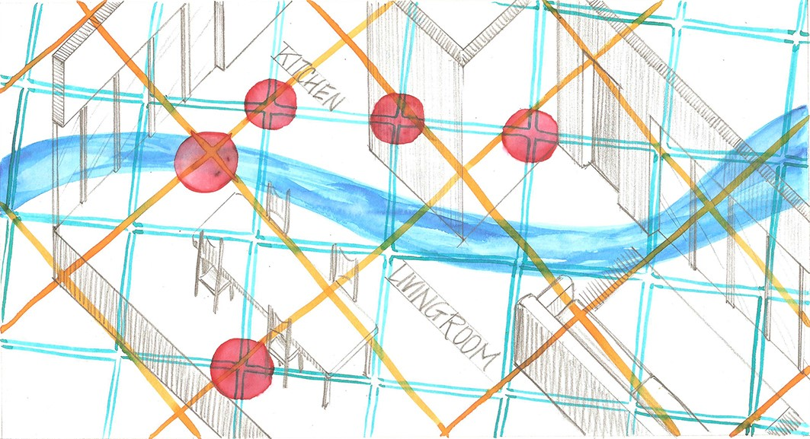
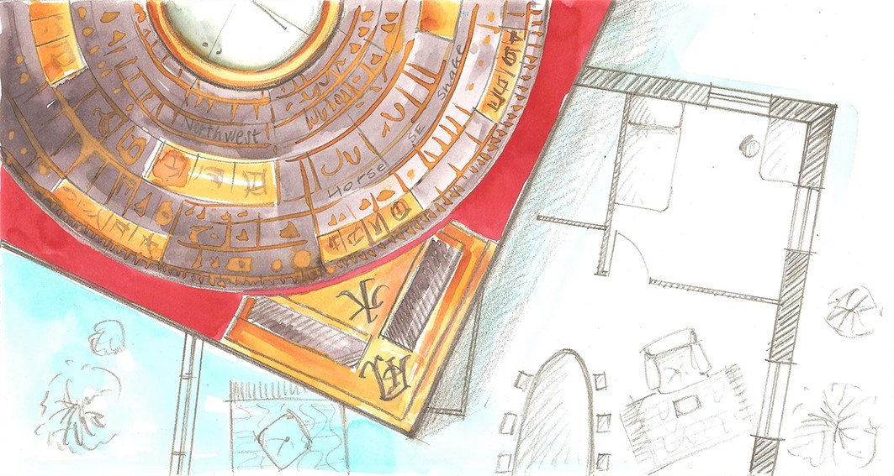
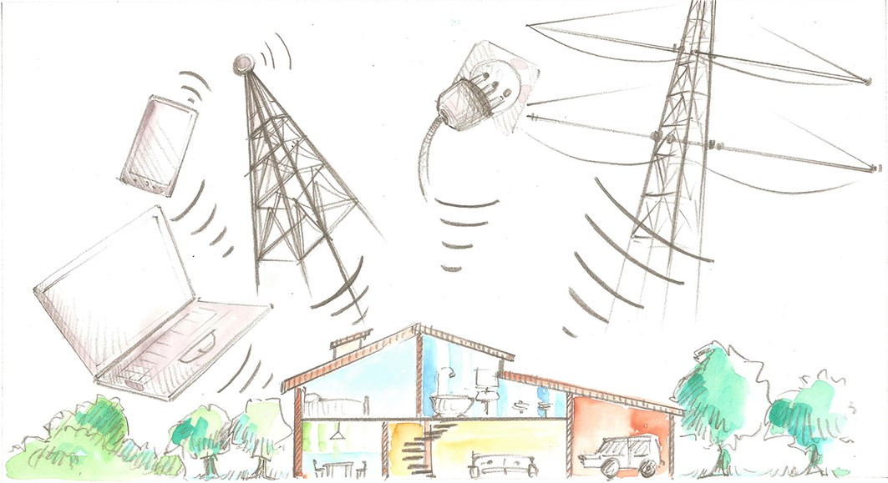
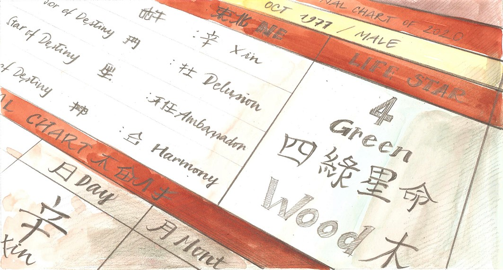
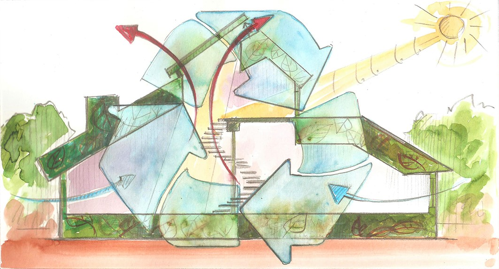
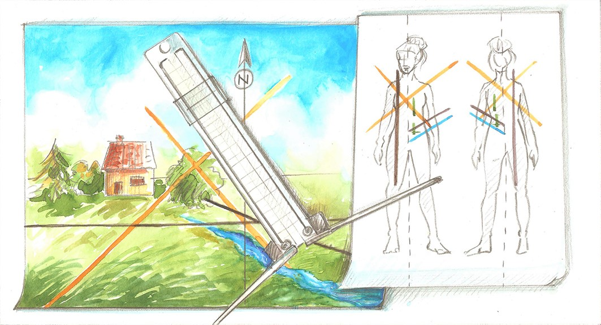

Geobiologia
Scienza che studia l'influenza delle emanazioni cosmiche e
geotelluriche su tutti gli esseri viventi. L'obiettivo di questa
analisi è la definizione di ambienti sani e non più nocivi per chi
li vive.

Feng Shui
Scienza metafisica orientale utilizzabile sia nelle abitazioni
private sia in ambienti lavorativi, potenzia il benessere
psicofisico, relazionale, lo stato di salute così come incrementa
la produttività e migliora le potenzialità e talenti di chi abita
o lavora in questi luoghi.

Elettrosmog
Inquinamento elettromagnetico, conseguenza del progresso
tecnologico, tratta emissioni elettriche, magnetiche ed
elettromagnetiche emesse da fonti artificiali. L'investigazione di
queste emissioni mira la tutela della persona

Yi Jing
Metodo di divinazione mediante gli esagrammi, chiamato anche "I
Ching", restituisce una lettura delle energie che transitano in
quel particolare momento presente al fine di una maggiore
comprensione della realtà che si vive.

Bazi
Sistema avanzato di astrologia, tecnica che analizza la tipologia
e la composizione energetica individuale, le predisposizioni e le
attitudini, le interazioni con le energie che transitano nel tempo
e che creano influenze positive o sfavorevoli.

Selection Date
“L’arte di essere al posto giusto, nel momento giusto". Metodo
di calcolo della data propizia definito per la persona specifica e
il rispettivo obiettivo da raggiungere al fine di massimizzarne le
probabilità di riuscita.

Bioarchitettura
Disciplina che fonde il costruire consapevole rispettando
l'ambiente e il suo abitante. Predilige materiali ecosostenibili e
sistemi di risparmio energetico, risponde all'esigenza di vivere
in ambienti sani.

Antenna Lecher
Metodo d'indagine che permette la misurazione d'informazioni
energetiche e le relazione tra le varie sorgenti naturali ed
artificiali del campo elettromagnetico e gli organismi viventi.

Qimen dun Jia
Antica tecnica predittiva che permette di calcolare e individuare
la migliore strategia a sostegno delle decisioni da intraprendere,
obiettivi personali, in qualsiasi campo della vita dell’individuo.